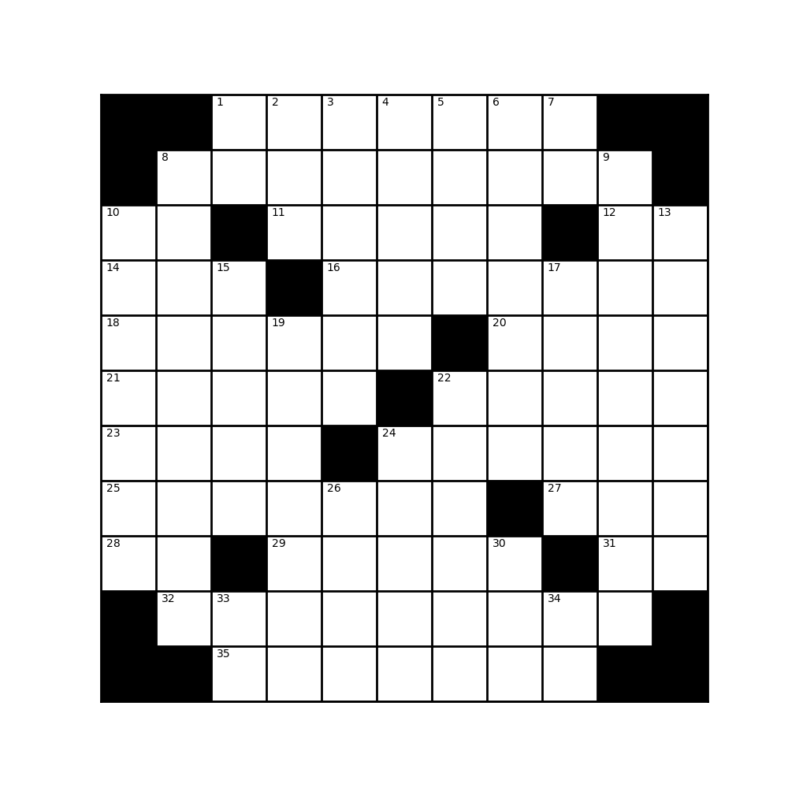

Crucigrama
{kind=link}
Un crucigrama es un pasatiempo en el que se deben descubrir palabras que se entrecruzan en una cuadrícula, a partir de unas definiciones o sugerencias que se proporcionan y de las pistas que van generándose con el conocimiento de las letras de otras palabras que hayamos acertado.
Este ejercicio está relacionado con el problema de resolución de un crucigrama.
Hay dos con grilla y definiciones.
La grilla de entrada del crucigrama está dada en un archivo en forma de texto donde las casillas vacías se representan con un guión «_» y las casillas en negro con un asterisco «*».
Las definiciones y soluciones, están dadas en el mismo archivo donde se encuentra la grilla.
En primer lugar se pide que escriba una rutina que lea el archivo con las definiciones de las grillas y de las palabras, y grafique el crucigrama con la numeración correcta. Por ejemplo, de la definición:
cruci = """ _____*___ _____*___ ____*____ ___*_____ **_____** _____*___ ____*____ ___*_____ ___*_____ """
debe graficar algo similar a:
Nota
La grilla siempre es cuadrada.
La grilla de entrada en formato texto puede tener espacios en blanco en cualquier lugar, que deben ser ignorados.
La rutina debe verificar que la grilla sea válida.
El programa debe también verificar que las soluciones son compatibles con la grilla dada.
Para administrar la interacción con el jugador, el programa debe:
implementar una manera sencilla para que el jugador proponga letras
mostrar la grilla actualizada
Verificar al completarse una palabra y dar una indicación si no es correcta
Verificar que el crucigrama está completo y dar un mensaje de finalización
Nota
Los gráficos no tiene que ser idénticos a los mostrados en el enunciado, pueden ser mejores.